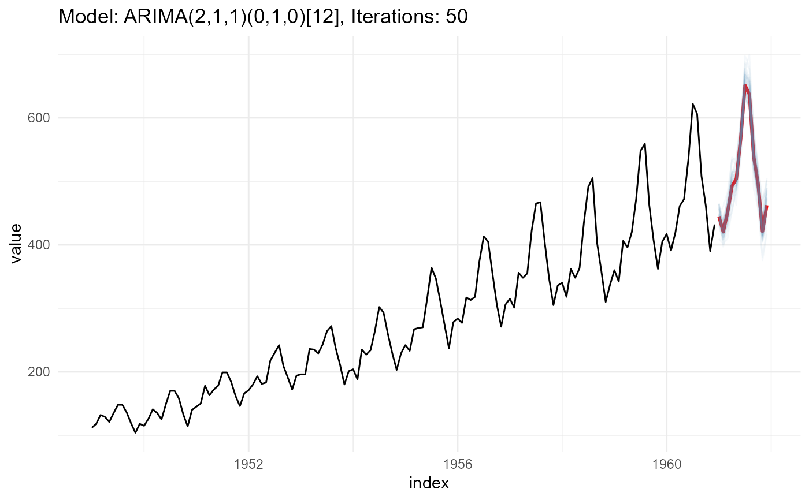

Creating different forecast paths for forecast objects (when applicable),
by utilizing the underline model distribution with the simulate function.
ts_forecast_simulator( .model, .horizon = 4, .iterations = 25, .sim_color = "steelblue", .alpha = 0.05, .data )
| .model | A forecasting model of one of the following from the |
|---|---|
| .horizon | An integer defining the forecast horizon. |
| .iterations | An integer, set the number of iterations of the simulation. |
| .sim_color | Set the color of the simulation paths lines. |
| .alpha | Set the opacity level of the simulation path lines. |
| .data | The data that is used for the |
The original time series, the simulated values and a some plots
This function expects to take in a model of either Arima,
auto.arima, ets or nnetar from the forecast package. You can supply a
forecasting horizon, iterations and a few other items.
Steven P. Sanderson II, MPH
suppressPackageStartupMessages(library(forecast)) suppressPackageStartupMessages(library(healthyR.data)) suppressPackageStartupMessages(library(dplyr)) suppressPackageStartupMessages(library(timetk)) suppressPackageStartupMessages(library(ggplot2)) suppressPackageStartupMessages(library(plotly)) suppressPackageStartupMessages(library(purrr)) suppressPackageStartupMessages(library(tidyquant)) suppressPackageStartupMessages(library(tidyr)) data <- healthyR_data %>% filter(ip_op_flag == "I") %>% select(visit_end_date_time) %>% rename(date_col = visit_end_date_time) %>% summarise_by_time( .date_var = date_col , .by = "month" , value = n() ) %>% filter_by_time( .date_var = date_col , .start_date = "2012" , .end_date = "2019" ) data_ts <- tk_ts(data = data, frequency = 12)#> Warning: Non-numeric columns being dropped: date_col# Create a model fit <- auto.arima(data_ts) # Simulate 50 possible forecast paths, with .horizon of 12 months output <- ts_forecast_simulator( .model = fit , .horizon = 12 , .iterations = 50 , .data = data )#> Warning: `type_convert()` only converts columns of type 'character'. #> - `df` has no columns of type 'character'output$ggplotoutput$plotly_plot output$forecast_sim_tbl#> # A tibble: 600 x 4 #> x y n id #> <dbl> <dbl> <chr> <int> #> 1 9 757. sim_1 1 #> 2 9.08 824. sim_1 2 #> 3 9.17 798. sim_1 3 #> 4 9.25 818. sim_1 4 #> 5 9.33 778. sim_1 5 #> 6 9.42 881. sim_1 6 #> 7 9.5 759. sim_1 7 #> 8 9.58 674. sim_1 8 #> 9 9.67 645. sim_1 9 #> 10 9.75 801. sim_1 10 #> # ... with 590 more rowsoutput$input_data#> # A tibble: 96 x 2 #> index value #> <dttm> <int> #> 1 2012-01-01 00:00:00 1375 #> 2 2012-02-01 00:00:00 1371 #> 3 2012-03-01 00:00:00 1530 #> 4 2012-04-01 00:00:00 1452 #> 5 2012-05-01 00:00:00 1475 #> 6 2012-06-01 00:00:00 1388 #> 7 2012-07-01 00:00:00 1489 #> 8 2012-08-01 00:00:00 1474 #> 9 2012-09-01 00:00:00 1275 #> 10 2012-10-01 00:00:00 1322 #> # ... with 86 more rowsoutput$sim_ts_tbl#> # A tibble: 600 x 5 #> index x y n id #> <dttm> <dbl> <dbl> <chr> <int> #> 1 2020-01-01 00:00:00 9 757. sim_1 1 #> 2 2020-02-01 00:00:00 9.08 824. sim_1 2 #> 3 2020-03-01 00:00:00 9.17 798. sim_1 3 #> 4 2020-04-01 00:00:00 9.25 818. sim_1 4 #> 5 2020-05-01 00:00:00 9.33 778. sim_1 5 #> 6 2020-06-01 00:00:00 9.42 881. sim_1 6 #> 7 2020-07-01 00:00:00 9.5 759. sim_1 7 #> 8 2020-08-01 00:00:00 9.58 674. sim_1 8 #> 9 2020-09-01 00:00:00 9.67 645. sim_1 9 #> 10 2020-10-01 00:00:00 9.75 801. sim_1 10 #> # ... with 590 more rowsoutput$forecast_sim#> sim_1 sim_2 sim_3 sim_4 sim_5 sim_6 sim_7 sim_8 #> Jan 9 756.5625 887.0261 984.3584 844.8119 845.1270 807.7144 939.3426 870.4060 #> Feb 9 824.2490 909.6946 833.0631 899.1046 943.6967 877.9665 793.4219 876.5993 #> Mar 9 797.6146 815.7317 913.9781 804.6283 912.8061 1066.2206 871.6514 900.2944 #> Apr 9 817.7774 870.9665 811.4132 779.1184 854.6253 1001.1235 868.6219 809.8703 #> May 9 777.8167 886.1907 888.9082 796.5117 916.5121 810.5292 993.0069 838.5122 #> Jun 9 880.8109 914.8599 948.5221 756.8697 779.5206 952.1937 954.8514 855.5905 #> Jul 9 758.7571 941.4567 889.6737 877.7573 747.9698 846.1309 846.6829 951.3949 #> Aug 9 674.3388 948.4445 815.9461 853.0112 714.6998 971.0403 846.3173 741.0300 #> Sep 9 644.9282 855.2865 902.0736 787.9207 693.6394 911.0612 844.0520 732.5107 #> Oct 9 800.9095 944.2303 1058.0884 987.9152 700.5640 989.3086 853.4357 910.3632 #> Nov 9 678.7912 903.6914 838.3047 785.5677 689.4391 1048.1035 840.3697 856.1123 #> Dec 9 774.1488 896.1857 763.2881 859.6404 789.3225 990.7254 695.9446 828.2238 #> sim_9 sim_10 sim_11 sim_12 sim_13 sim_14 sim_15 sim_16 #> Jan 9 873.3691 773.2135 829.1910 987.4701 1010.2319 970.0019 958.9107 946.7984 #> Feb 9 879.7947 732.0157 711.2582 894.8180 819.8442 698.8654 850.0156 946.6018 #> Mar 9 962.2949 778.7962 736.1162 894.2670 991.6540 773.7357 864.5234 929.0401 #> Apr 9 997.9575 704.0439 823.8891 891.4176 970.3387 840.0065 764.4638 893.7442 #> May 9 943.5930 715.3578 914.7434 904.3561 802.1544 800.0502 941.6972 814.4851 #> Jun 9 812.0948 681.9033 750.3515 859.8684 896.7902 864.9450 771.4993 851.4015 #> Jul 9 926.7343 781.0181 849.1803 912.4172 844.6384 697.3575 821.1412 880.1265 #> Aug 9 882.4646 674.9979 830.4081 782.2852 855.4709 807.1342 804.1793 807.1977 #> Sep 9 717.7119 526.4783 623.9608 860.5894 817.9782 685.3232 874.7099 812.4644 #> Oct 9 784.8232 654.8179 797.1319 752.6854 925.5368 744.4731 838.7689 798.3839 #> Nov 9 880.9449 676.2398 717.3145 819.9885 602.6551 679.7911 768.4830 774.4941 #> Dec 9 838.9535 775.5514 772.3316 811.5072 882.5668 691.4599 919.7428 640.3448 #> sim_17 sim_18 sim_19 sim_20 sim_21 sim_22 sim_23 sim_24 #> Jan 9 850.3930 834.8374 818.7506 932.2050 902.8036 734.9336 923.1324 920.4025 #> Feb 9 805.4028 689.6718 914.1260 869.1818 878.6400 847.7157 926.1121 852.0601 #> Mar 9 877.4879 776.9472 811.4704 761.1584 837.8248 827.5977 831.7954 887.9604 #> Apr 9 816.6715 804.3070 822.2000 845.9400 837.1559 697.5181 938.9974 896.2483 #> May 9 881.7890 859.2890 753.7765 882.8625 971.7403 790.3296 934.1014 864.0548 #> Jun 9 794.2052 813.9885 824.3970 835.1440 739.0560 839.0006 953.3613 848.1467 #> Jul 9 827.1657 878.7588 675.2910 946.9267 892.2602 835.5053 820.9487 754.0937 #> Aug 9 827.6626 784.6623 818.0964 983.6834 864.6580 709.4351 884.8373 813.5266 #> Sep 9 734.4304 716.1215 678.4380 825.4592 765.1425 736.8786 827.0411 700.0361 #> Oct 9 871.4964 690.1764 714.5051 786.3797 750.6138 743.3671 887.8453 816.9268 #> Nov 9 774.6095 896.4774 707.5321 852.9881 850.5140 719.3149 869.1170 721.3731 #> Dec 9 880.2770 814.4921 618.9492 838.4959 828.7892 753.8450 869.8657 673.6426 #> sim_25 sim_26 sim_27 sim_28 sim_29 sim_30 sim_31 sim_32 #> Jan 9 942.5695 893.9142 820.1785 817.7220 813.9335 801.8495 989.6958 706.5303 #> Feb 9 823.5914 806.3851 868.0163 806.9768 936.7929 710.2186 878.6647 754.4809 #> Mar 9 785.4001 946.9207 872.4438 746.4117 817.4590 756.9045 834.2706 796.0867 #> Apr 9 769.0905 861.4046 741.6239 795.9517 760.4732 756.1133 832.2681 800.8546 #> May 9 885.4272 843.6550 775.4512 680.8829 845.3723 884.8527 897.7747 888.8063 #> Jun 9 876.8369 794.3412 792.7119 805.6700 850.5370 812.5396 803.4516 716.5772 #> Jul 9 888.0463 806.3961 779.5676 666.2389 738.7540 724.5879 810.3392 788.7769 #> Aug 9 846.6763 845.9169 764.1768 623.9819 845.8673 665.9179 683.1596 796.3602 #> Sep 9 892.2716 808.8719 696.5586 784.4601 783.6576 719.1352 593.9283 724.6517 #> Oct 9 853.7200 833.5394 832.2666 776.8322 743.0996 696.8824 832.6014 783.0355 #> Nov 9 882.7907 823.4508 811.4554 738.2750 692.1788 728.3203 721.3924 825.5404 #> Dec 9 851.8498 885.7924 723.5104 711.3351 673.6085 728.8078 728.5292 867.9467 #> sim_33 sim_34 sim_35 sim_36 sim_37 sim_38 sim_39 sim_40 #> Jan 9 854.8168 856.2443 806.7014 917.9017 930.4950 886.5487 895.2554 903.3105 #> Feb 9 861.2997 875.0483 878.1383 899.4812 892.6229 717.7350 882.3315 862.8111 #> Mar 9 830.6209 848.4398 824.4423 804.5572 903.8789 779.4685 905.1870 804.6839 #> Apr 9 818.1897 872.5630 868.9517 920.4790 921.0833 799.9924 842.1547 816.3737 #> May 9 891.0446 917.1681 819.5428 755.1480 992.2530 800.1594 1032.4017 914.6297 #> Jun 9 882.2568 965.0998 742.9052 875.2216 783.8950 626.0950 868.4360 854.4729 #> Jul 9 835.7055 910.4044 939.0036 806.3394 920.1301 697.8954 974.0722 911.4820 #> Aug 9 812.7068 862.3826 746.7351 785.0972 799.5325 650.9943 876.8564 813.5060 #> Sep 9 879.8107 799.3484 771.0301 852.6973 869.5548 676.2891 891.3970 752.8645 #> Oct 9 764.2508 768.2568 887.8712 758.2011 916.5513 724.5063 897.9564 827.7019 #> Nov 9 795.6605 822.1542 869.3550 701.6658 896.0408 619.1788 827.5484 769.3353 #> Dec 9 802.5585 844.1156 753.4713 763.2346 827.3128 680.6166 823.6424 832.6932 #> sim_41 sim_42 sim_43 sim_44 sim_45 sim_46 sim_47 sim_48 #> Jan 9 1008.9346 795.2963 810.3036 862.9350 836.3218 911.0790 984.4556 885.6504 #> Feb 9 926.6737 850.9993 759.0780 893.2632 864.0900 840.0533 907.2881 645.4299 #> Mar 9 920.6883 892.0475 740.6914 871.7000 747.4327 917.7017 897.1799 742.0422 #> Apr 9 983.6765 917.6663 698.3524 763.3737 774.7748 879.5615 889.7854 808.9351 #> May 9 869.4364 947.1154 780.8437 945.4128 865.5862 976.4603 936.9319 703.5600 #> Jun 9 1055.4666 804.3447 794.8704 841.5171 772.5079 861.0991 875.0126 768.1580 #> Jul 9 939.7584 873.8777 770.2138 707.7261 734.9395 881.6641 917.7117 804.7105 #> Aug 9 897.8243 826.9277 845.0586 898.2112 828.9432 834.0729 922.0162 801.1202 #> Sep 9 1055.2730 849.4190 700.4406 784.0078 849.0772 812.7577 717.8517 744.9557 #> Oct 9 1004.0744 937.5965 689.2838 916.5290 875.3912 910.2380 749.8401 714.6021 #> Nov 9 913.7413 832.9276 721.5544 839.3399 793.1238 931.6623 839.6391 831.3612 #> Dec 9 921.8984 842.0734 796.9056 850.9228 732.4469 828.9298 838.6841 682.4161 #> sim_49 sim_50 #> Jan 9 890.3919 959.9236 #> Feb 9 751.6478 866.1550 #> Mar 9 803.3400 837.4022 #> Apr 9 683.0824 823.6730 #> May 9 812.1385 811.6738 #> Jun 9 799.1825 810.2829 #> Jul 9 794.9277 849.6862 #> Aug 9 804.9591 902.1147 #> Sep 9 803.9778 767.1538 #> Oct 9 834.2610 914.6296 #> Nov 9 703.5034 836.6751 #> Dec 9 724.5535 847.9790output$time_series#> Jan Feb Mar Apr May Jun Jul Aug Sep Oct Nov Dec #> 1 1375 1371 1530 1452 1475 1388 1489 1474 1275 1322 1347 1288 #> 2 1389 1167 1247 1277 1320 1228 1308 1243 1196 1264 1117 1163 #> 3 1313 1111 1167 1231 1207 1184 1229 1157 1128 1110 949 1161 #> 4 1172 966 961 1006 991 1073 1143 1130 1061 1101 981 1069 #> 5 1065 980 1115 997 1083 1032 962 993 921 911 928 1030 #> 6 1072 938 1077 961 1041 1060 1018 988 1007 1009 979 1023 #> 7 1145 985 1015 1016 1040 1117 1057 1040 829 1027 949 916 #> 8 1009 918 961 908 961 904 913 862 849 913 860 887